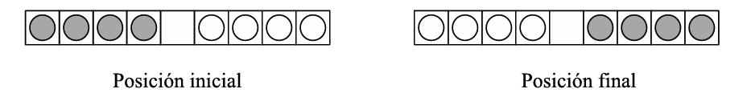

Permutar significa reordenar. En este bloque nos enfrentamos a situaciones en las que reordenamos una serie de elementos. Esto es relativamente habitual en la práctica.
Personas en fila
Cinco personas distintas se colocan en una fila.
- ¿De cuántas formas diferentes pueden colocarse?
- ¿De cuántas formas pueden colocarse si dos personas concretas deben estar juntas?
Libros en una estantería
Se colocan seis libros distintos en una estantería, uno al lado del otro.
- ¿De cuántas formas diferentes se pueden ordenar los seis libros?
- ¿De cuántas formas pueden ordenarse si dos libros concretos deben ocupar posiciones consecutivas?
Factorial
Para poder contar de cuántas formas se pueden ordenar objetos, necesitamos introducir el factorial.
Factorial de un número
El factorial de un número natural \( n \), que se escribe \( n! \), se define como el producto de todos los números naturales desde \( 1 \) hasta \( n \):
\( n! = 1 \cdot 2 \cdot 3 \cdots n \)
Por ejemplo:
– \( 3! = 1 \cdot 2 \cdot 3 = 6 \)
– \( 5! = 1 \cdot 2 \cdot 3 \cdot 4 \cdot 5 = 120 \)
Por convenio, se define también:
\( 0! = 1 \)
Permutaciones sin repetición
En los problemas de Personas en fila y Libros en una estantería hemos contado de cuántas formas se pueden ordenar objetos distintos.
Permutaciones sin repetición
Se llaman permutaciones sin repetición de \( n \) elementos distintos a todas las formas posibles de ordenarlos, de manera que:
– se utilizan todos los elementos,
– no se repite ninguno,
– el orden importa (si cambiamos el orden, obtenemos un elemento distinto a considerar en nuestro recuento).
El número de permutaciones sin repetición de \( n \) elementos es:
\( P_n = n! \)
Es decir, hay \( n! \) formas distintas de ordenar \( n \) objetos diferentes.
Palabras
Ordenando letras.
Considera la palabra MIRLO.
- ¿Cuántas palabras distintas se pueden formar permutando todas sus letras?
- ¿Cuántas de ellas empiezan por la letra M?
Considera ahora la palabra MATEMÁTICAS.
- ¿Cuántas palabras distintas se pueden formar permutando todas sus letras?
- ¿Cuántas de ellas empiezan por la letra M?
El sol y la luna
El solitario Sol y Luna consta de un tablero con nueve casillas y ocho fichas, cuatro de un color y cuatro de otro (generalmente, blanco y negro, que representan el día y la noche, de ahí el nombre del juego). El objetivo del juego consiste en llevar las fichas de la posición inicial a la final, mediante movimientos legales:

Un movimiento legal es aquel que respeta las reglas del juego. Estas son:
- Las fichas negras se desplazan siempre de izquierda a derecha; las blancas, en sentido opuesto.
- Una ficha puede moverse si la casilla contigua (en el sentido de desplazamiento que le es permitido) está vacía; o bien, puede saltar (en el sentido de desplazamiento que le es permitido) por encima de una ficha del otro color, siempre que el cuadrado que haya a continuación esté libre (de igual forma que en el juego de las damas, pero sin “comer” ninguna ficha).
- En cada casilla, hay como máximo una ficha.
¿De cuántas formas se pueden disponer las fichas en el tablero si son colocadas al azar?
Preguntas de ampliación (conviene que estudies primero la situación con dos soles y dos lunas):
- ¿cuántas de estas formas se pueden alcanzar mediante movimientos legales?
- ¿cuántos movimientos son necesarios para completar el juego?
Permutaciones con repetición
En los problemas de Palabras hemos visto que, cuando algunas letras se repiten, no todas las ordenaciones son distintas.
Permutaciones con repetición
Se llaman permutaciones con repetición a las ordenaciones de \( n \) elementos cuando algunos de ellos se repiten.
Si tenemos:
– \( n \) elementos en total,
– \( n_1 \) elementos iguales de un tipo,
– \( n_2 \) elementos iguales de otro tipo,
– …,
el número de permutaciones distintas es:
\( \displaystyle \frac{n!}{n_1!\,n_2!\,\cdots} \)
Esta fórmula evita contar varias veces las ordenaciones que solo se diferencian en el intercambio de elementos iguales.